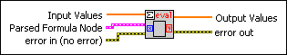

Eval Parsed Formula Node VI
Owning Palette: 1D & 2D Evaluation VIs
Requires: Full Development System
Separates the parsing process from the evaluating process of the Eval Formula Node VI and improves the run-time behavior of a program containing Eval Formula Node VIs at different locations.

 Add to the block diagram Add to the block diagram |
 Find on the palette Find on the palette |